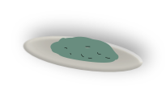
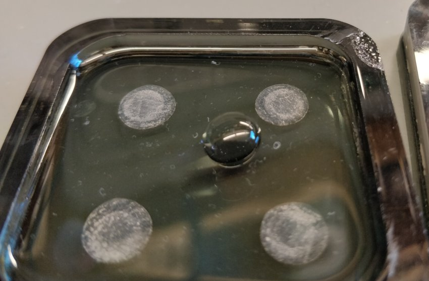
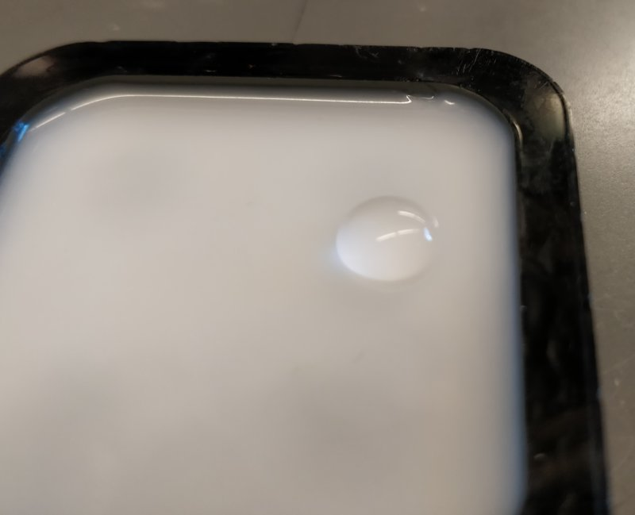
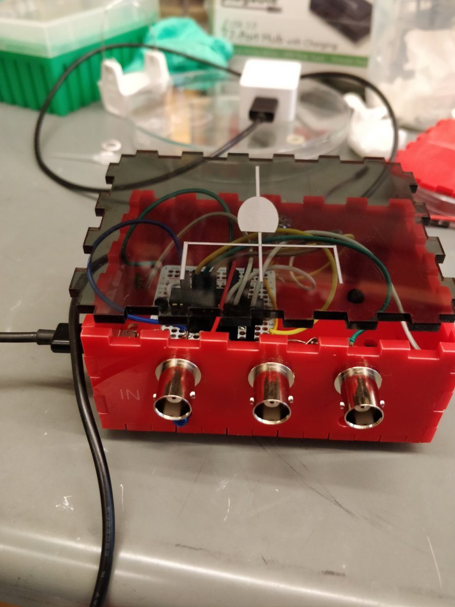
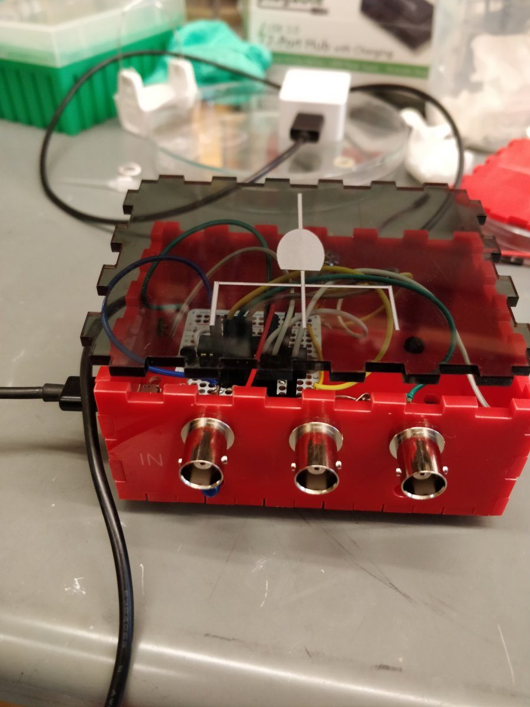

Microscopy and analysis
- diSPIM: organoid mounting
- diSPIM: refractive index matching and remote focus
- OR-Gate device
- Live photo-bleaching and analysis
Nico Stuurman, 2018-12-14
diSPIM: organoid mounting

Matrigel mold using PDMS
Poor Matrigel/organoids in mold, harden, invert, remove PDMS

Matrigel mold using PDMS
Poor Matrigel/organoids in mold, harden, invert, remove PDMS

FAIL
diSPIM: origanoid mounting
Oxygen plasma treated coverslip
diSPIM: refractive index matching and remote focus
Design of remote focus
Objective, remove scanner Reverting to current will take ~1hrOR-Gate device
- Hardware synchronization using electrical signals
- Problem: combining signals from multiple cameras
- Solution: Powered, logical OR gate
- Now reproducible design
OR-Gate device
 

Live photo-bleaching and analysis
Plan:
- Record "live", use "point and shoot" to bleach moving organelles
- Analysis: Automatically find bleach spot,
- Stage 1: Get intensity at bleach spot over time
- Stage 2: Track particle, then get intensity as function of time, of bleached spt and particle
- Calculate exchange within particle and between particle and outsise